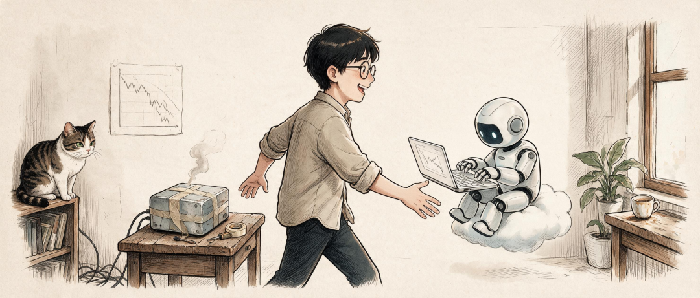
距离上一次更新Claude code的教程类已经过去了两个月，60天并不长。但对AI、投资来说，60天又很长。原本以为只是“技术性调整”，不要慌；结果先是韩股，日股，A股；昨晚连最为坚挺的美股，也迎来了自己的A股时刻。谷歌，英特尔等等浓眉大眼的全球龙头的业绩后暴跌12-20%，20天腰斩的速度和A股比也不遑多让。难，投资难，科技投资更是难上加难啊。
但是难才有机会，难才有意思。人教人，学不会，事教人，一下就会，学无止境，赚不到钱，多少也得赚点经验、赚点知识再走吧。
话不多说，在上次写完《奔波儿1.0》后，我的AI投研系统几乎没有什么变化了，24小时待命的Mac mini配合openclaw+笔记本上的claude及codex，组成了我的系统。Personal Agent出来后尝试了dots，一言难尽，用湖南话说，蠢不待发。
在即刻的开发者们不断地安利，以及gpt的弱智程度肉眼可见的提升下，我开始尝试了grok bot。其实一个多月以前我就试用过7天，当时毫无感觉，但是这两天用了以后惊为天人，疯狂地把我的任务迁移到grok bot上后，第一时间写下这篇文章和大家分享。
点击阅读原文，跳转到详细的Grok bot新手教程
约4100字 · 阅读约10分钟
本文目录
• Grok bot 能做到什么？
• Grok bot的明显优势
◦ 一次就能办成
◦ 快，而且丝滑
◦ 产品化做得细
◦ 国内付款方便了
◦ 推特资源随便薅
• 怎么用上Grok bot？
◦ 下载、登录、订阅
◦ 接入现有APP
◦ 云电脑，以及偶尔读你本机
◦ 开启任务，异动点评！
• 管他股票洪水滔天，认真用AI总没错
一、Grok bot 能做到什么？
Grok bot是马斯克的X.AI斥巨资收购的cursor团队开发的Personal Agent。
在我眼里，grok bot=云端的mac mini+可靠优化版的openclaw+降档版本的Opus模型。他是一款更偏向于生产力的Personal agent，在开发者社区广受好评。
它可以做什么，除了之前说过的日报、周报、研究以外，还有一个最日常的场景：异动找原因，这也是研究员最经常碰到，但是又最不想干的事情。
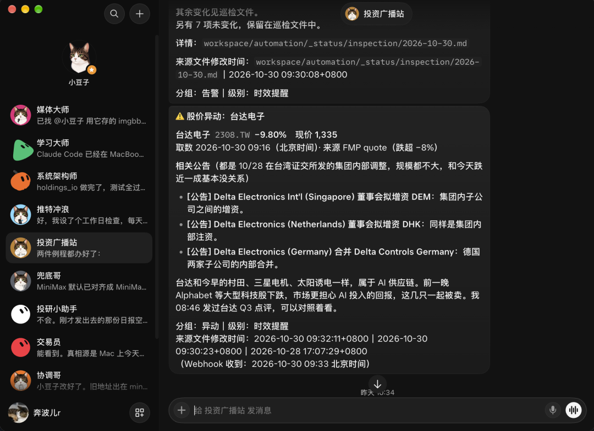
台达跌了10%，它先在公司层面找原因，然后看相关的股票是否有大跌，发现台达跟随其他关注的AI硬件链股票大跌，前一天google大跌，于是归因到行业层面。从公司-行业-市场三个维度，检测到异动后自动查找原因。真香啊。只需要接入有盘中价格的数据，加上搜索其实就足够，如果能加上有券商点评的api就更好了。
而且实现起来同样非常简单，你只需要新建一个bot，比如我这里就是投资广播站，专门给我推送消息的。然后提出要求“我希望监控股票池的异动，并且从公司-行业-市场三个维度去自动寻找原因”，它会向你确认异动的标准，数据源等等，就搞定了。
这只是grok bot的冰山一角，在推特和即刻上看大家是怎么用grok bot的，你会感叹大家太能搞事情了。
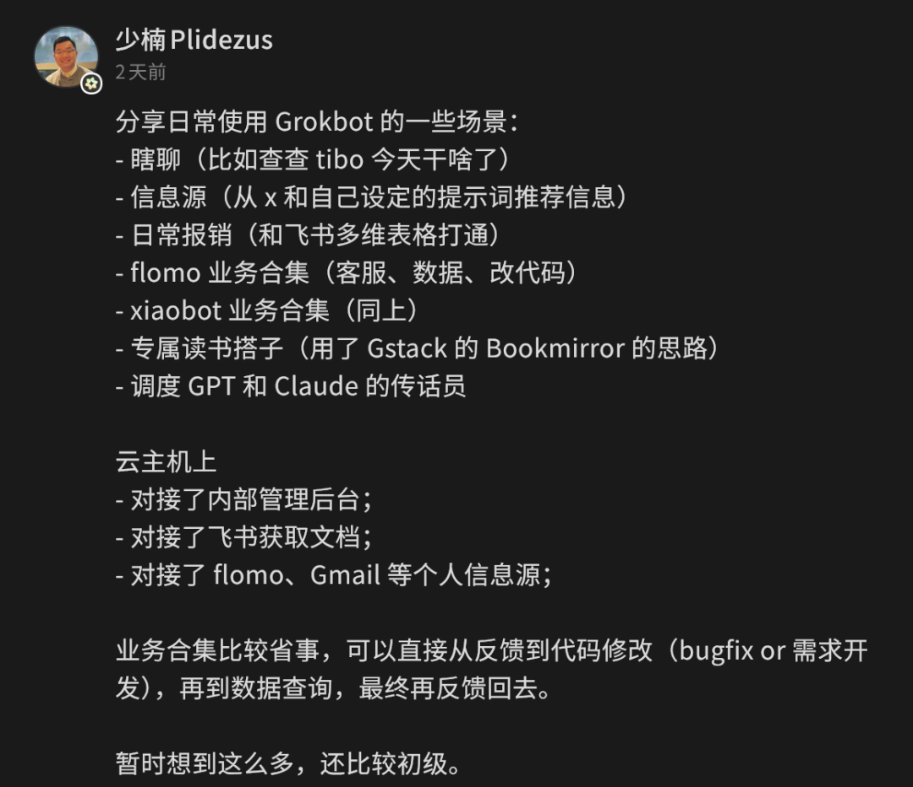
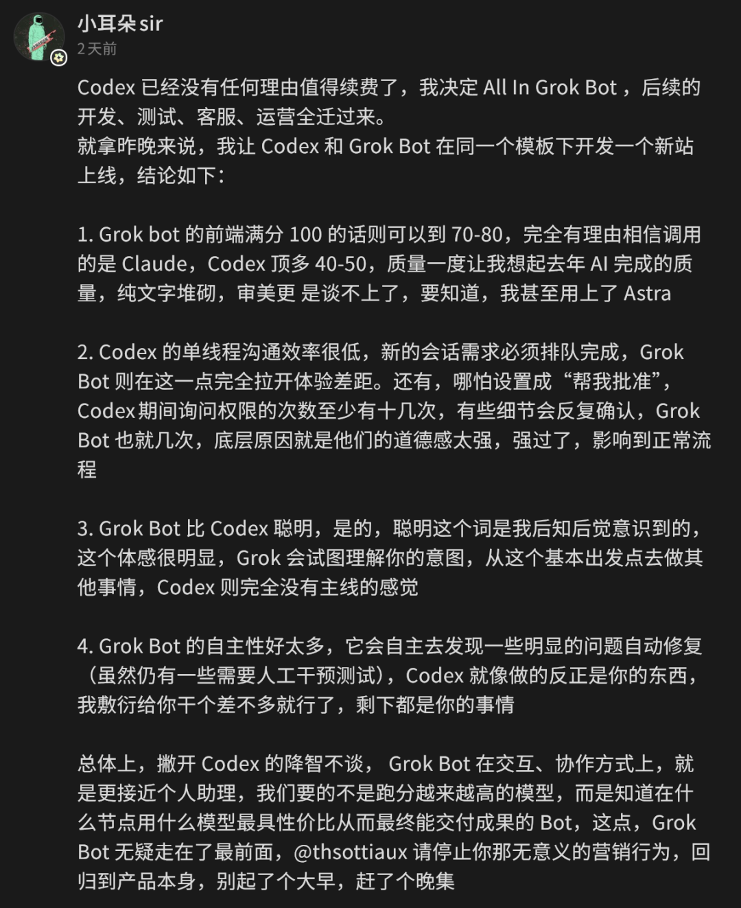
二、Grok bot的明显优势
1. 一次就能办成
Personal Agent 最烦人的是审批。读个文件点一下，查个网页点一下，写个文件再点一下，用到最后，我不像老板，反而像个盖章员。
Grok Bot 大部分事自己往下做，只有真该你拍板的地方才来问你，比如花钱，这一步它仍然要你批准。
我印象最深的是这件事：我把 Gmail 交给它，让它建一套健康监控。它自己去注册了一个服务 healthchecks.io，自己到邮箱里把 API 拿出来，自己填进配置里，整套机制就建起来了。
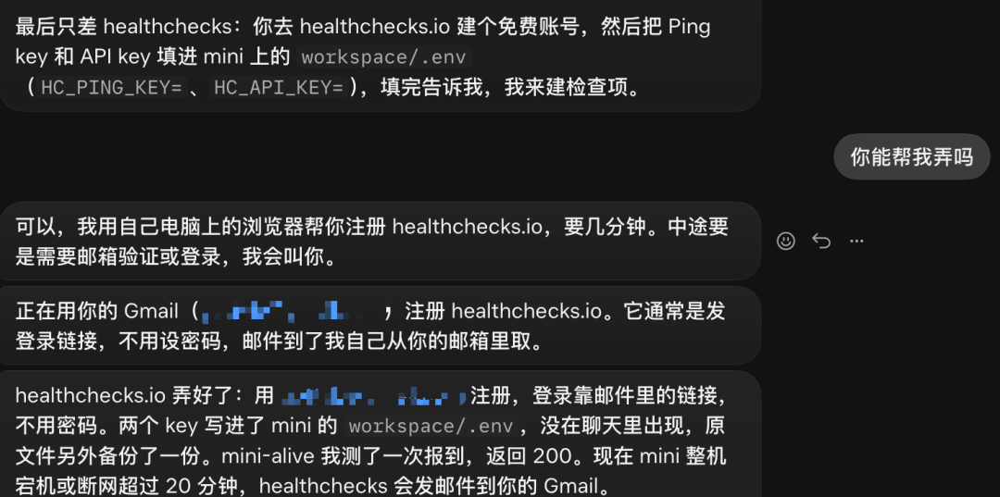
这种活，换成那种什么都要你点同意的 Agent，光是审批就得点一路。Grok Bot 是一次就跑通，我这两天用下来，任务一次成功的比例很高。
一次成功，对我最大的价值是省心。AI 帮我干活，我的注意力就该花在判断上，而不是花在盯着它、点确认上。
相比于我之前的本地Mac mini+Openclaw，稳定性强太多了，之前我的Openclaw没过两天就坏了，然后又要用claude code去修，都是一些小问题小BUG，太烦了。
2. 快，而且丝滑
用 Claude 或 Codex，先要选模型，再调推理强度。简单的事用大模型，浪费；难的事选小了，翻车。用之前还要选好强度。
Grok Bot 把这一步直接拿掉了。任务怎么拆、该用哪个模型，它自己安排。背后到底怎么调度的，我不知道，我只知道用起来很快，很顺，不用我再去调什么。
对大部分人，这是更高级的形态。选模型、调推理强度，本来就不该是用户的活，产品把它吃掉，说明任务编排和路由做得好。
这种丝滑很难用文字写出来，你自己用两天，就能感觉到。
推特上有个例子可以参考：@xx03199 只说了一句“生成一个专门盯美股的bot”，就建好了一个盯盘 bot，盘前简报、盘中异动、财报对比、收盘复盘全有。
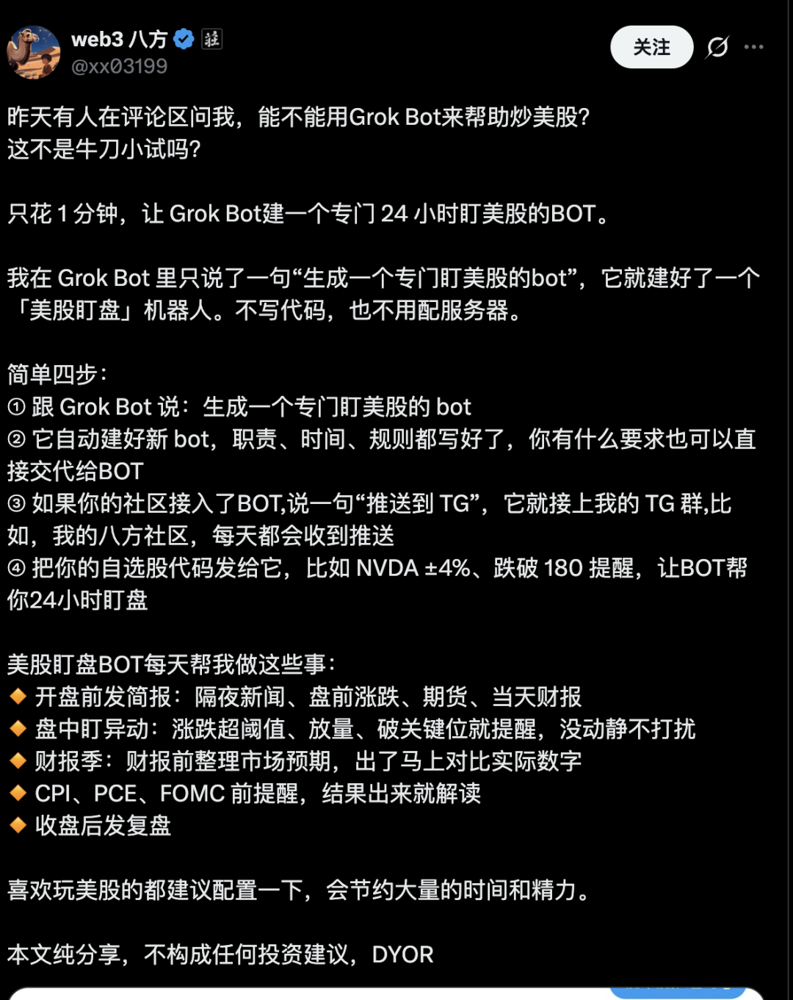
3. 产品化做得细
这块我挑三处讲。
第一，多个 agent 之间分活和通信。给每个 Bot 一份工作，把几个 Bot 拉进同一个对话，它们自己传活、互相问，我在旁边看着。你不用当传话筒。
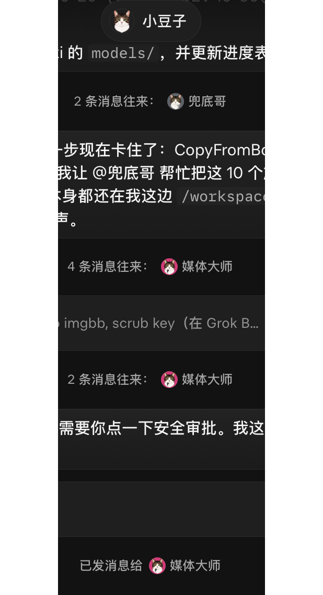
第二，密钥。API、账号、密码这些东西，它有专门的地方存着，输入的界面和普通聊天分开，不会混在聊天记录里。给 AI 干活，最怕的就是这些东西被到处粘贴。
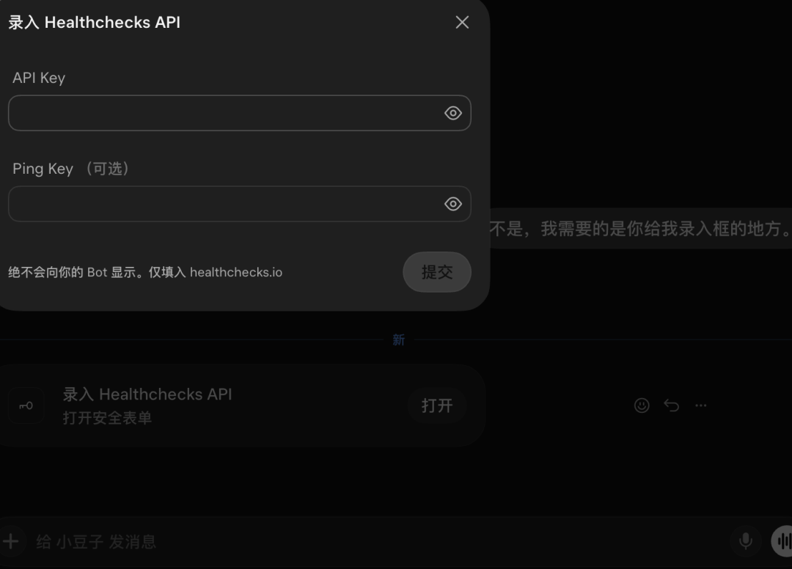
第三，一些小细节，比如语音输入的界面，设计得非常人性化。
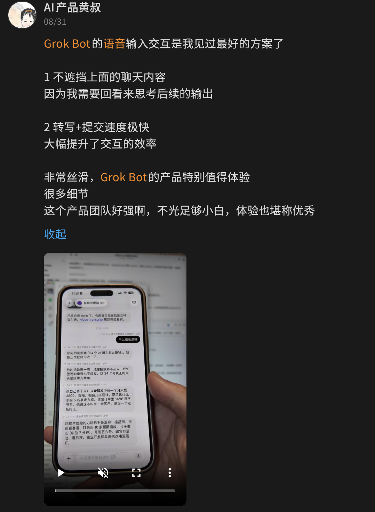
4. 国内付款方便了
以前订阅要用 Visa，用 Apple 支付还得交税。10 月 31 日前后，Grok 订阅页开始支持支付宝和银联：账单地区选中国，付款方式里就会出现这两项。再也不用如履薄冰，天天担心会不会封号了。
感恩老马！支持SpaceX收购A社！
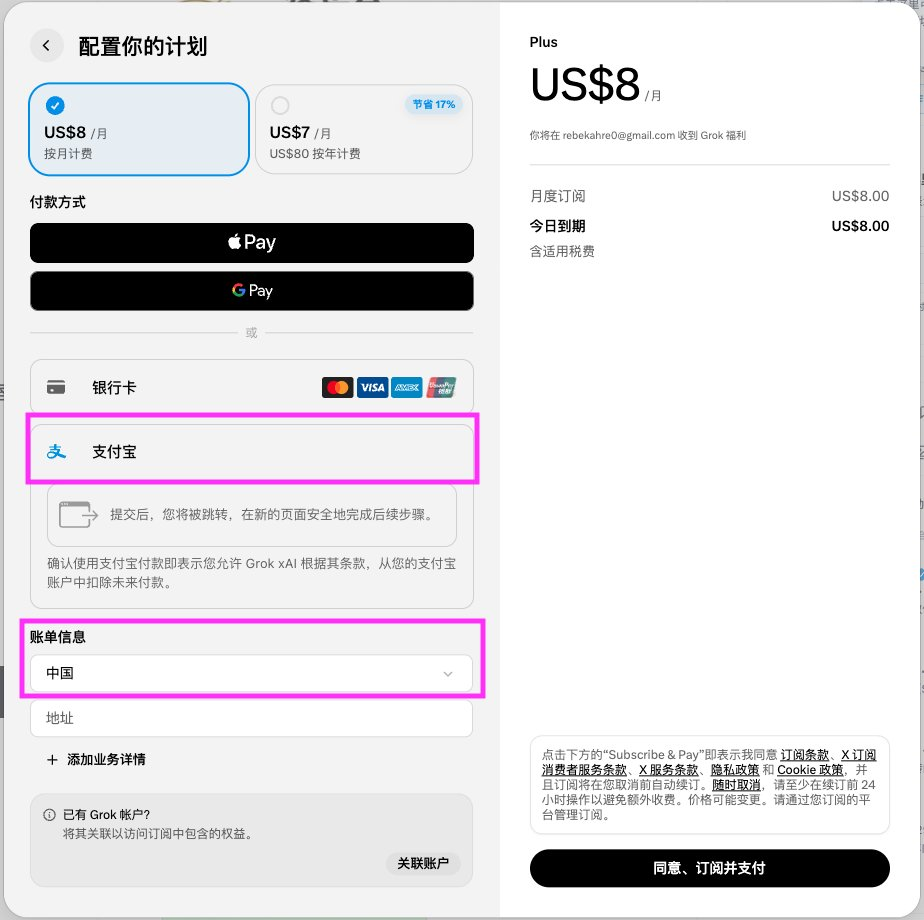
5. 推特资源随便薅
Grok bot其实是cursor团队推出的产品，但目前已经和twitter、cursor的账号都可以合并了。所以你订阅了grok bot以后，可以让他随意帮你在推特上冲浪，问他最近讨论的主题，你关注的人是否有更新，总结和下载视频等等，再也不用单独为推特的API付费了。
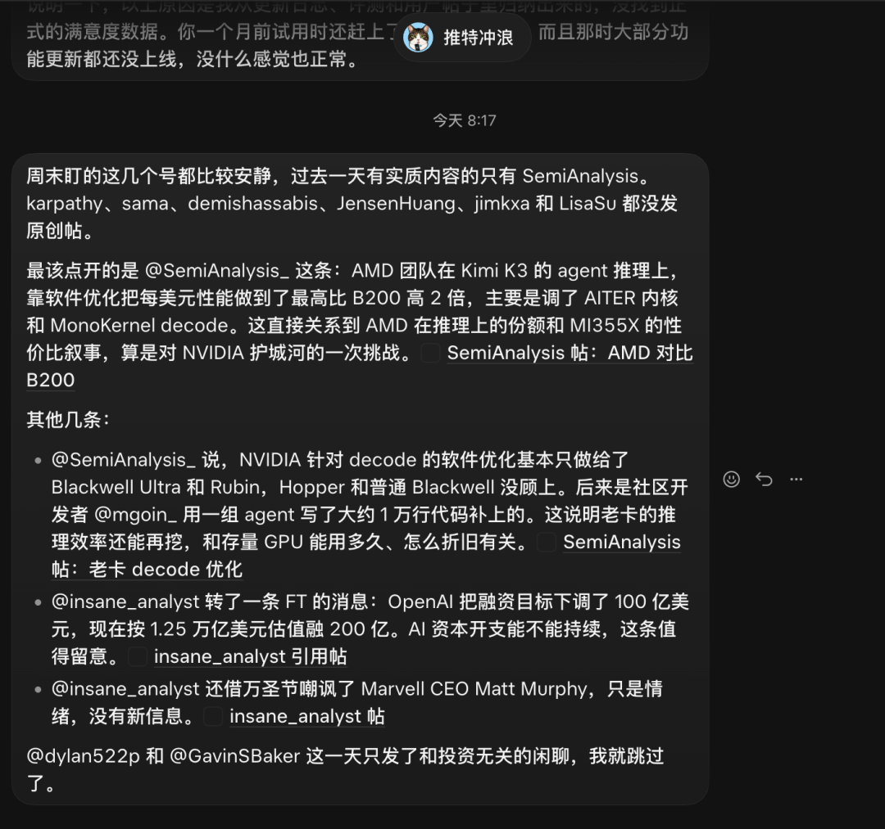
三、怎么用上Grok bot？
详细版可以点阅读原文，里面有Grok bot指南。
1. 下载
电脑
打开 https://x.ai/bot 下载。支持 macOS（Intel / Apple 芯片）、Windows、Linux。
手机
• iPhone：App Store，系统要 iOS 18 或以上（iPad 同为 iPadOS 18+）
• Android：Google Play，Android 9 或以上
• 中国大陆 App Store 目前多数人搜不到这个应用；美区、港区、台区、新加坡、日本等外区能装。
外区ID怎么弄可以去B站搜索，非常简单。
2. 登录
打开后点 Sign in，浏览器会弹出登录页，选「Sign in with X」，用推特账号授权。登录页可能显示 Cursor 或 xAI 的名字，这是正常的，不用另外注册 Cursor。以后每次都用推特登录，换别的方式登录会变成另一个账号。
如果想用Cursor或者自己邮箱登录的要注意，是否已经把几个账号link了，注意不要充了一个账号，但并没有和自己的推特Link。
全新注册的话就是以cursor为准的，后面link到自己的推特账号就行，不用担心。
3. 订阅
目前有四个档位，还有第一个月半价，我目前订的是super，Agent用得少Premium足够，再给他提供一点deepseek的额度就行，充值好以后把deepseek API给他，并且让他在云端安装好deepseek Harness。
• Plus（每月约 8 美元）：不含 Grok Bot
• Premium（每月约 30 美元）：含 Grok Bot，用量大约是 Plus 的 4 倍
• Super（每月约 100 美元）、Ultra（每月约 200 美元）：也含，用量更大
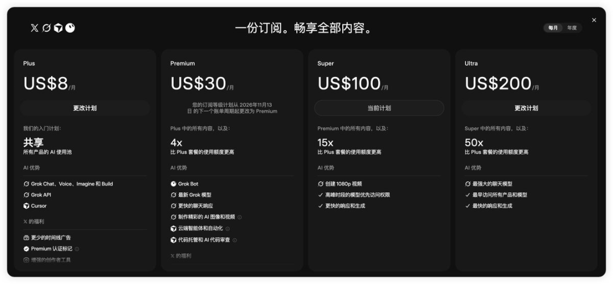
10月30日起已经支持支付宝付款！！！只需要把账单地址改到中国，简单写一下账单地址就行了。一定要用网页版，不要用APP store，苹果税会贵30%！
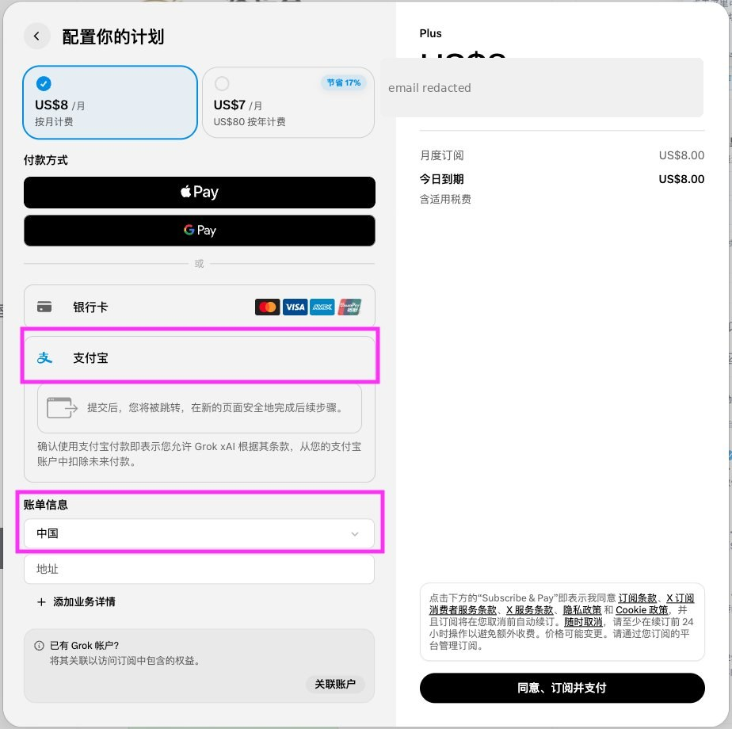
4. 接入现有APP
我自己是应点尽点，如果大家不放心的话可以按需选择。为了后面的使用，可以让AI帮你把不敏感的研究材料之类的上传到Google Drive，之后就可以让Grok bot在云端读取现有材料，叠加数据源进行研究了。
另外建议连接notion，这样可以让他把研究的成果直接输出到notion里面，做一个可视化的呈现，读起来非常方便。不过直接在grok bot里面读也行。
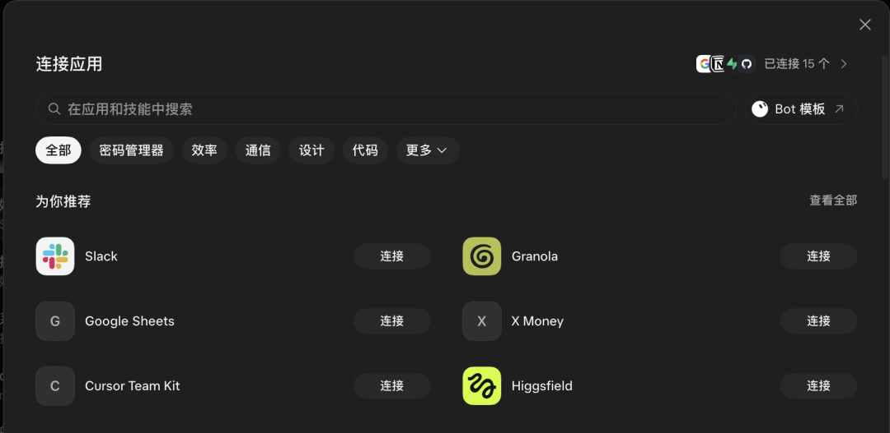
5. 云电脑，以及偶尔读你本机
每个账号有一台共享的云电脑：桌面、终端、文件、已登录的网站会话都在上面。所有 Bot 共用这一台；你合上电脑，它还在干。对话右侧可以点开电脑预览，看它点了什么、输了什么。
你自己的 Mac / Windows 是另一回事。默认它不乱动本机；只有开了本地权限、并且你批准之后，它才能在本机读文件或跑命令。本地 skill、本地资料要搬上去的时候，可以让它登录你的电脑读一遍再迁到云上——具体开关以 App 里 Approvals / 本地电脑策略为准。
密码、验证码别往普通聊天里贴。需要登录时，它会用保险箱、密码管理器或 Secure Form；过不去的步骤（验证码、人脸、银行验证）会把电脑交还给你，你点完再让它继续。
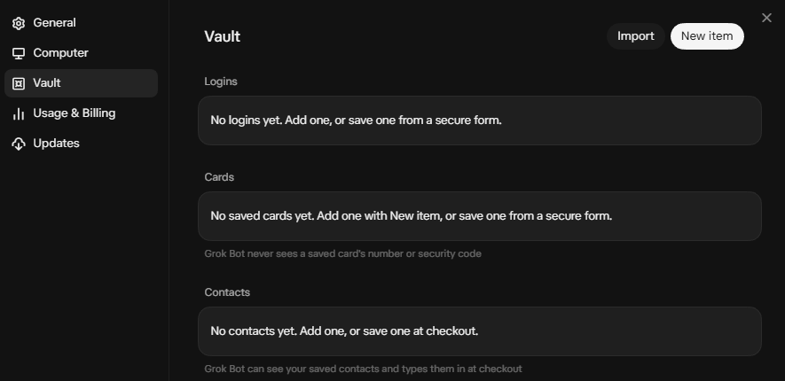
6. 开启任务，异动点评！
https://x.ai/bot/F61F-WuNC9XRV2Q0NYF5H ，点击链接可以直接用我的grok bot小助手。
创建一个新的Bot，叫做异动监控。
你专门负责盘中异动点评。发现【股票/板块】价格突然异动时：自己去查新闻、公告和板块联动；材料优先读我 Drive 里【文件夹名】；写成一段短点评推到这个对话。先别下单，先别对外发，等我点头。
第二句可选，接上信息源：
需要查公开信息时，用浏览器；如果我已经装了 X 或新闻相关连接器，优先用连接器。查不到就说查不到，别编。
想让它定时扫，再说一句建 Routine：
每个交易日美东 9:35–16:00，每 30 分钟扫一次【股票/板块】。有异动才推点评；没有就别刷屏。时区按我日历来。
你可以让他自己去找有没有免费的盘中行情数据源，我自己是接入了之前自己买的国内的Tushare 和美股的FMP。
接下来你就可以让他推送啦，再按照你自己的要求，让他写长点评，还是短点评，记得让他可视化一点，这样读起来会更加舒服。
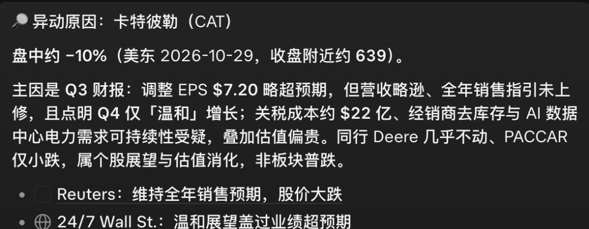
管他股票洪水滔天，认真用AI总没错
宏大叙事总是引人注目，从AI吞噬一切，到全都是泡沫只需要半年。其实本质就是涨多了，就会跌，跌了这么多，也就是抹平了今年的涨幅，前两年十几倍的涨幅还在呢。所以让股票的归股票，生活的归生活，咱该吃吃，该喝喝，该用AI咱还是得好好用。
这是本系列的第一篇，我也才用了3天，后续有好的用法会继续更新，欢迎大家评论区多多留言讨论。
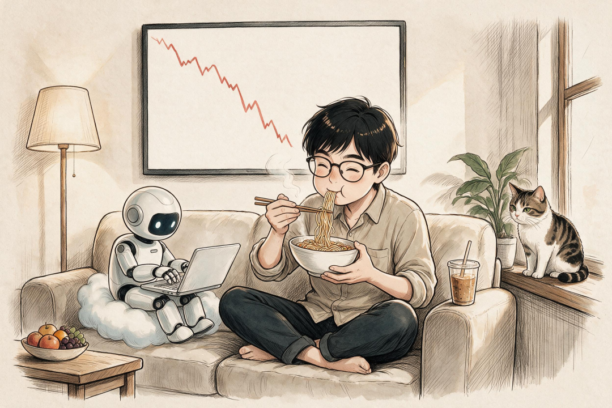